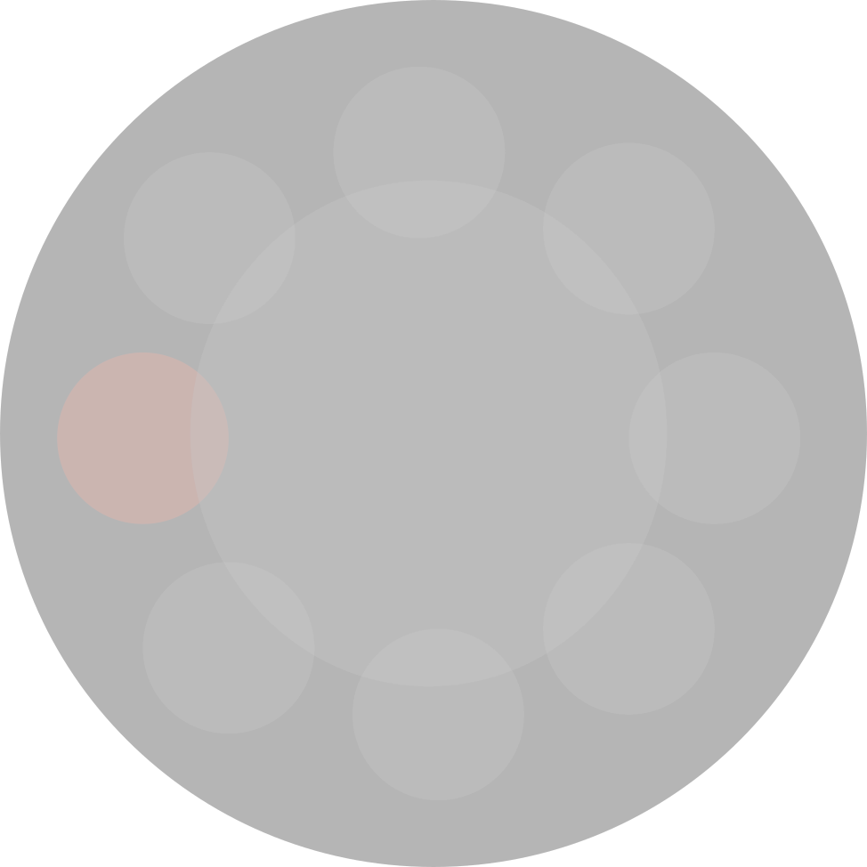
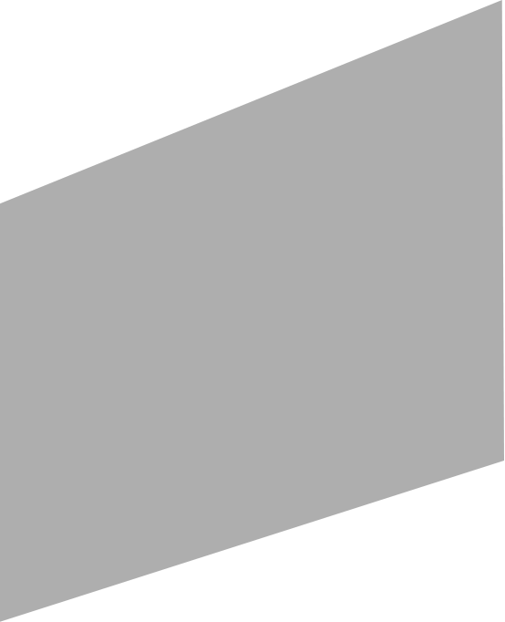
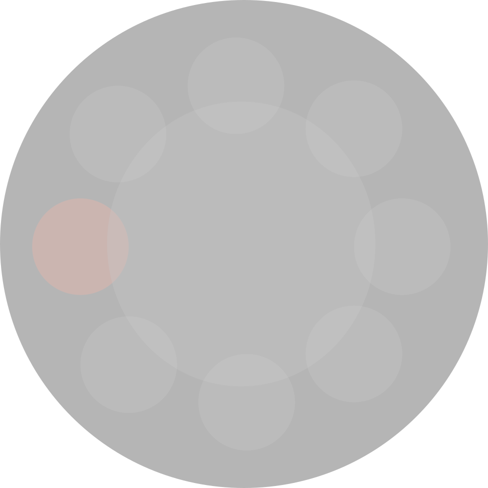
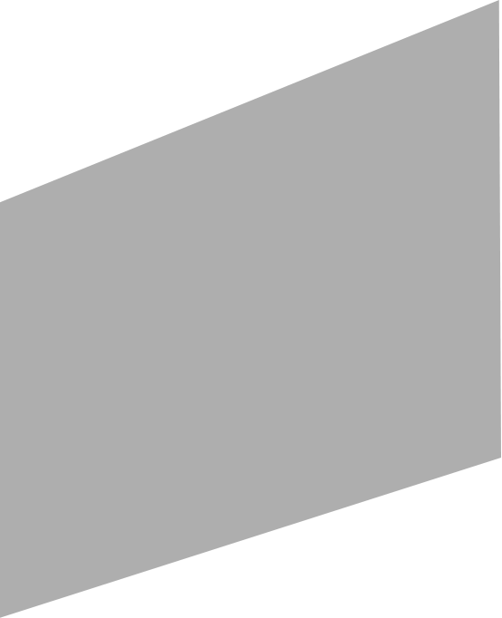

БИТВА ЗА СЕВАСТОПОЛЬ
21-22 мартаРежиссер
- Сергей Мокрицкий
В главных ролях
- Юлия Пересильд
- Евгений Цыганов
Фильм о легендарной женщине-снайпере 25-й Чапаевской стрелковой дивизии Людмиле Павличенко. К неполным 25 годам на ее счету были три сотни уничтоженных гитлеровцев
спонсор показа
ВОЙНА АННЫ
28-29 мартаРежиссер
- Алексей Федорченко
В главных ролях
- Марта Козлова
Вся семья главной героини погибает во время массового расстрела. Сама она чудом остается в живых. Девочка живет, прячась в нерабочем камине в комендатуре, пока деревню не освобождают от нацистов. Анне удается не только выжить, но и сохранить в себе человека. Ей помогают в этом ее собственные воспоминания о родителях, доме, а также друг, который спасает ее от полного одиночества
спонсор показа
СВОИ
4-5 апреляРежиссер
- Дмитрий Месхиев
В главных ролях
- Дмитрий Месхиев
- Константин Хабенский
Август 1941. Линия фронта ушла на восток... Трое сбежали из плена. Им некуда податься. Кругом - враги. Лес полон страхов. Болота - затягивают. В деревне - Старик. Кто он? Чужой? Свой? Кто они для него? Чужие? Свои? Они - в его власти. Их можно убить. Их можно сдать в комендатуру. Но один из них - его сын. Младший. Любимый. Снайпер.
спонсор показа
РАЙ
11-12 апреля
Режиссер
- Андрей Кончаловский
В главных ролях
- Юлия Высоцкая
- Кристиан Клаусс
- Филипп Дюкель
- Виктор Сухоруков
Судьбы трех героев - участницы французского Сопротивления, эмигрантки дворянского рода, француза, сотрудничающего с оккупантами и высокопоставленного немца-эсэсовца. Эта лента - проникновенная исповедь трех человек перед камерой о всех их заблуждениях, прегрешениях, обидах и тайнах. Самые острые и болезненные моменты исповеди оживают на экране в театральной манере, погружая зрителя в жуткую атмосферу военных лет, в которые самой большой наградой считается возможность сохранить человеческое лицо
спонсор показа
КУКУШКА
18-19 апреляРежиссер
- Александр Рогожин
В главных ролях
- Анни-Кристина Юусо
- Вилле Хаапасало
- Виктор Бычков
"Кукушка" - так русские солдаты называли финских снайперов. Сентябрь 1944 года. На хутор к саами Анни попадают финский снайпер Вейко и капитан Советской армии Иван. Солдаты враждующих армий еще не знают, что Финляндия заключила перемирие и вышла из войны. Но для Анни они не враги. Для нее они просто мужчины... И все трое говорят на разных языках...
спонсор показа
ИНН 7729093870
artik.artik739@yandex.ru
ООО Артик (с) 2020. Все права защищены